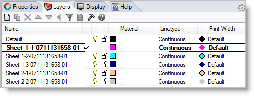

This tab displays a list of all sheets that have been specified, including multiples of the same size and sheets of other sizes. Selecting each sheet previews the nest for the selected sheet in the graphics area.
Nesting Browser - Choose Nesting Parameters tab |
Check this box and all nested geometry will be forced onto the XY Plane. 2D curves will lie on the XY Plane. For 3D solids, the base of the solids will lie on the XY Plane. |
These options allow you to create the sheets and nested parts in separate groups. If one of these options is selected, each output nested sheet will be added to a separate group using the same naming conventions used for the layers. Select from one of the following options: •Create a separate Layer for each nested sheet •Create a separate Group for each nested sheet •None |
These options allow you to control how remnant sheets are created during nesting. You can add any remnant sheet back into the sheets list so that they can be reused. You can also create a separate layer for each remnant sheet when the nest is committed. •Add remnants to the sheets list •Create separate layer for each remnant sheet |
Selecting Commit Nest outputs the nest results to Rhinoceros.
Each sheet is output to a new layer assigned with a unique layer name.  Nesting Complete: At the end of this Nesting process, you can return to RhinoCAM and create Mops for machining the parts in the nest. |
These options allow you to export each nested sheet to a separate drawing file. Export Path Use this to specify where you wish the exported sheet files to be located. Move every sheet's lower corner to origin Check this box to move the lower left corner of each sheet to the 0,0,0 Origin. Export Pick this button to export your sheets. |